Stat 470/670 Lecture 6: ggplot2, more formally
Julia Fukuyama
Today
Reading: Wickham (2010), A Layered Grammar of Graphics, JCGS.
ggplot2 and the grammar of graphics
Grammar of graphics
What does “grammar of graphics” mean?
The analogy with English grammar, or any language’s grammar, is that
it allows you to put together component parts
Better than “grammar of graphics” might be the “orthogonal components
of graphics,” but that doesn’t have the same alliterative appeal.
The power of the grammar of graphics is that it is modular: different
aspects of the plot can be specified independently of each other.
As an example, the coordinate system is specified separately from the
geometric object used to represent the points.
Here we have three representations of the same data, the only
difference between them being the coordinate system used to represent
them.
bar_plot = ggplot(diamonds) +
geom_bar(aes(x = "", fill = clarity), width = 1, position = "stack")
bar_plot
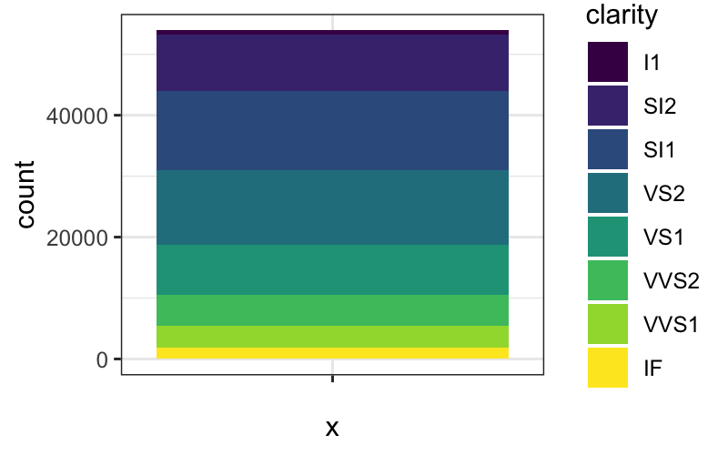
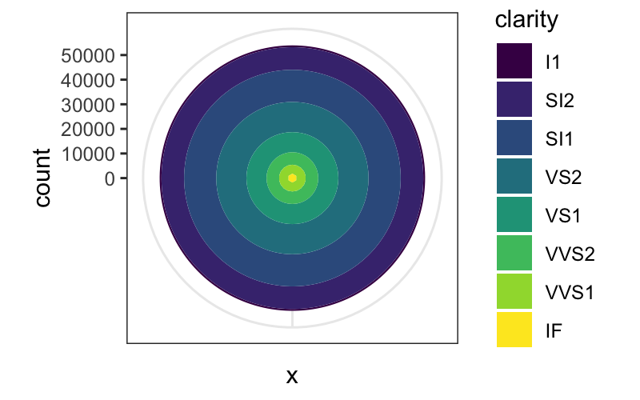
bar_plot + coord_polar(theta = "y")

Again, the same dataset, three different coordinate systems, very
different representations:
dodged_bar_plot = ggplot(diamonds) +
geom_bar(aes(x = "", fill = clarity), width = 1, position = "dodge")
dodged_bar_plot
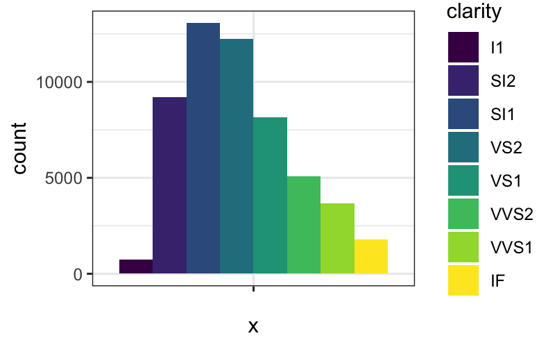
dodged_bar_plot + coord_polar()
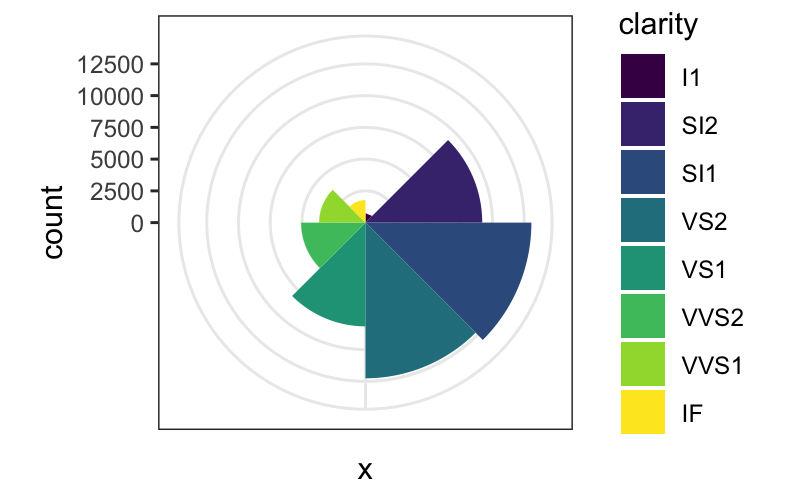
dodged_bar_plot + coord_polar(theta = "y")
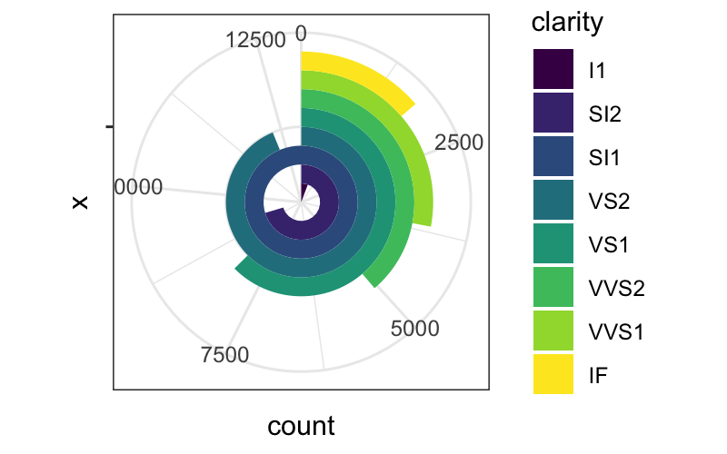
What are the components of a plot?
- A default dataset and set of mappings from variables to
aesthetics.
- One or more layers, each of which contains one geometric
(
geom_*) object, one statistical transformation
(stat_*), one position adjustment
(position_*), and one dataset and set of aesthetic
mappings.
- One scale for each aesthetic mapping.
- A coordinate system (
coord_*).
- A facet specification (
facet_*).
Layers are the most important and involved part of the plot.
Layers
ggplots are composed of one or more layers
- If you want anything to show up, you need to create a layer: any of
the
geom_* or stat_* commands create a layer
for you.
- Layers can also be created by hand using the
layer
command, and we’ll see that today for teaching purposes, but in practice
you make layers with geom_* or stat_*
- The
ggplot function on its own does not create a
layer.
What is a layer?
- data and aesthetic mapping
- statistical transformation (stat)
p = ggplot() + geom_point(data = diamonds, aes(x = color, y = clarity))
p$layers
## [[1]]
## mapping: x = ~color, y = ~clarity
## geom_point: na.rm = FALSE
## stat_identity: na.rm = FALSE
## position_identity
Data and aesthetic mapping
Data: self evident. For ggplot the data needs to be formatted as a
tibble or a data.frame.
Aesthetic mapping:
- Describes how variables in the dataset are mapping to “aesthetic”
attributes of the plot.
- “Aesthetic” here means perceivable: something you can observe on the
plot.
- Examples of aesthetic attributes/perceivable attributes: position
along the \(x\)-axis, color, shape,
position along the \(y\)-axis, opacity,
linetype
Data and aesthetic mapping go together because they are not at all
independent of each other: the aesthetic mapping takes variables in your
data and maps them to aesthetics/perceivable parts of the plot and is
therefore specific to a dataset.
Geometric object
Geometric objects (geom_*) control the type of plot you
create. Examples are
- Points, text (zero-dimensional geometric objects)
- Line, path (one-dimensional geometric objects)
- Polygon, interval (two-dimensional geometric objects)
- More complicated: boxplot
## point geom
ggplot(mtcars, aes(x = wt, y = mpg)) + geom_point()
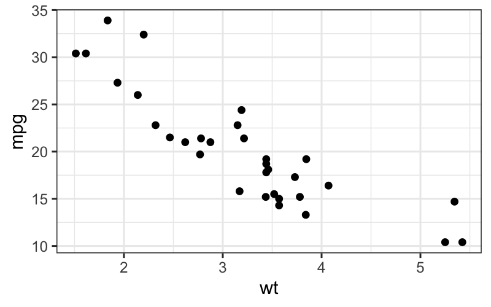
## text geom
ggplot(mtcars, aes(x = wt, y = mpg, label = rownames(mtcars))) + geom_text(size = 2)
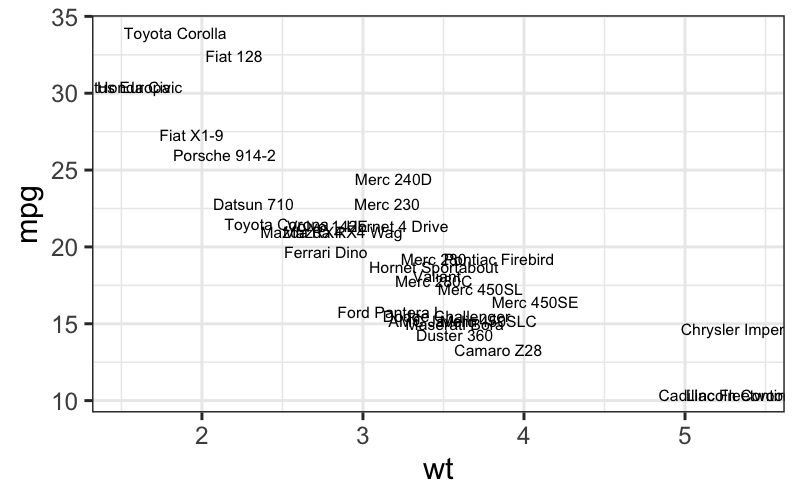
## bar geom
ggplot(mpg, aes(x = class)) + geom_bar()

## line geom
ggplot(economics, aes(x = date, y = unemploy)) + geom_line()
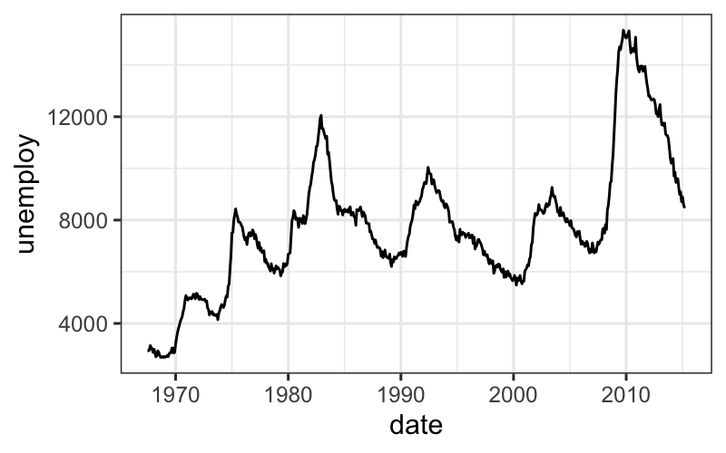
## path geom
ggplot(economics, aes(x = unemploy / pop, y = psavert)) + geom_path()
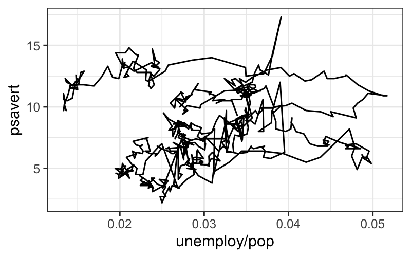
## data for errorbar geom
df <- data.frame(
trt = factor(c(1, 1, 2, 2)),
resp = c(1, 5, 3, 4),
group = factor(c(1, 2, 1, 2)),
upper = c(1.1, 5.3, 3.3, 4.2),
lower = c(0.8, 4.6, 2.4, 3.6)
)
## errorbar geom
ggplot(df, aes(x = trt, y = resp, colour = group)) + geom_errorbar(aes(ymin = lower, ymax = upper), width = 0.2)
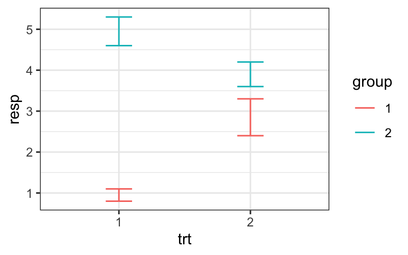
Relationship between stats and geoms
Every statistic has a default geometric object, and every geometric
object has a default statistic.
Stats and geoms are not completely orthogonal: not every combination
is valid (although many are).
For example:
stat_bin and geom_bar is valid and
standard for a histogram.
stat_bin and geom_point or
stat_bin + geom_line are valid but
non-standard combinations. They give a plot that is similar to a
histogram and that is interpretable in the same way.
stat_identity and geom_boxplot is invalid,
because boxplot needs certain computed quantities from the data.
Position adjustment
Used to avoid “collisions” in the plot objects:
- In bar plots where one of the aesthetics is height, the bars would
often be plotted over each other. In this case we use the “dodge” or
“stack” position adjustments.
- If we have issues with overplotting (multiple points in exactly the
same place), we can use the “jitter” position adjustment to randomly
move the points a small amount.
p = ggplot(diamonds) + geom_boxplot(aes(x = color, y = price))
p
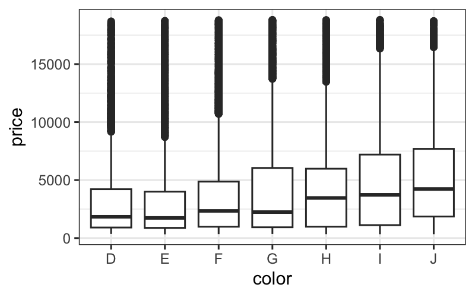
## [[1]]
## mapping: x = ~color, y = ~price
## geom_boxplot: outlier.colour = NULL, outlier.fill = NULL, outlier.shape = 19, outlier.size = 1.5, outlier.stroke = 0.5, outlier.alpha = NULL, notch = FALSE, notchwidth = 0.5, varwidth = FALSE, na.rm = FALSE, orientation = NA
## stat_boxplot: na.rm = FALSE, orientation = NA
## position_dodge2
ggplot(diamonds) + geom_boxplot(aes(x = color, y = price, color = clarity), position = "identity")
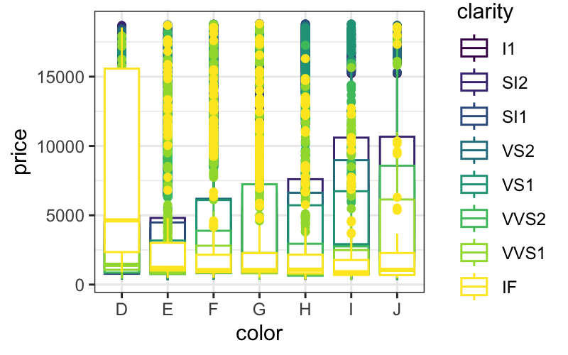
ggplot(diamonds) + geom_boxplot(aes(x = color, y = price, color = clarity), position = "dodge")

ggplot(diamonds) + geom_boxplot(aes(x = color, y = price, color = clarity), position = position_dodge(width = 1))
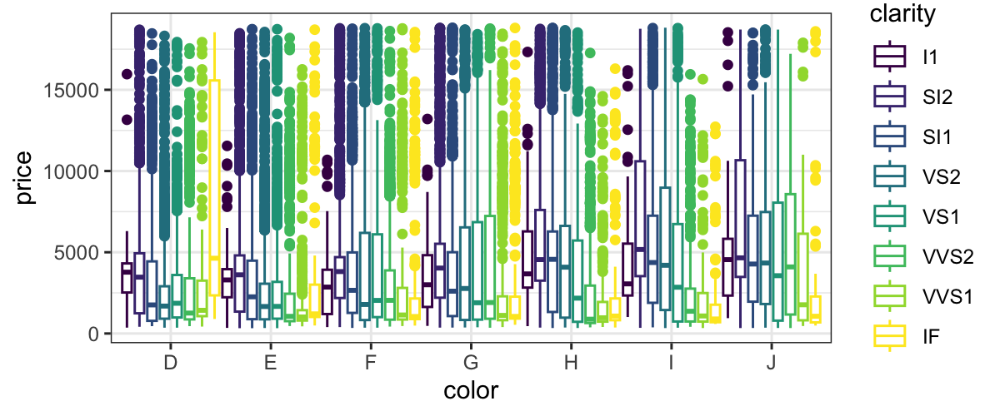
position = "dodge" is the default for boxplots, so you
don’t need to specify it.
Scales
So far, we’ve defined aesthetic mappings that specify which
perceivable aspects of the plot correspond to which variables.
However, there any many ways to map variables to perceivable aspects
of the plot.
For example, if we have a categorical variable that takes values “A”
and “B” to the color aesthetic, that means that color is going to
represent whether variable took value “A” or “B”. But we could do that
in a practically infinite number of ways, e.g.
A maps to “red”, B maps to “black”
A maps to “green”, B maps to “blue”
A maps to “purple”, B maps to “gold”
… You probably get the picture
ggplot has good default mappings from values into aesthetic space*,
but you will sometimes want to set them by hand.
To do so, you use the scale_* functions.
*This is true now: the old version of ggplot had poor mappings from
continuous values to colors, and the viridis
color scheme was much better. The most recent version of ggplot uses
viridis by default for both continuous values and ordered factors.
Coordinate system
Another aspect of the plot that can be specified independently of
everything else is the coordinate system.
coord_cartesian is the default, and is almost always
what you want.
coord_flip is sometimes useful: for example, boxplots
require the explanatory variable to be mapped to x, so if you want a
horizontal boxplot you need to use coord_flip.
coord_polar will often make your plots look cooler and
more difficult to read. Not usually recommended.
p = ggplot(cars, aes(x = speed, y = dist)) +
geom_point()
## cartesian coordinates
p
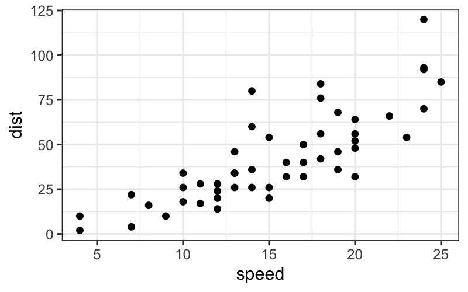
## log scale
p + coord_trans(x = "log10", y = "log10")
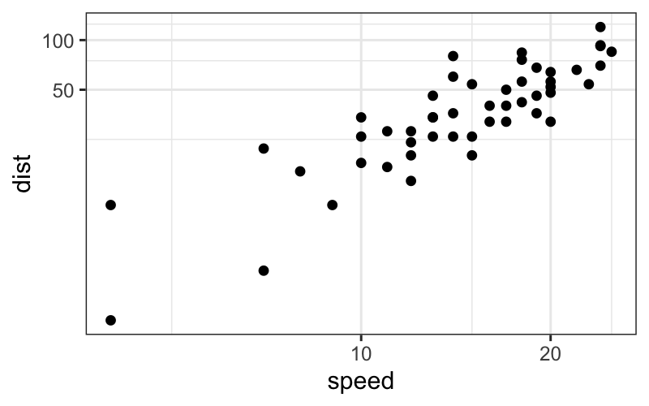
## polar coordinates
p + coord_polar()
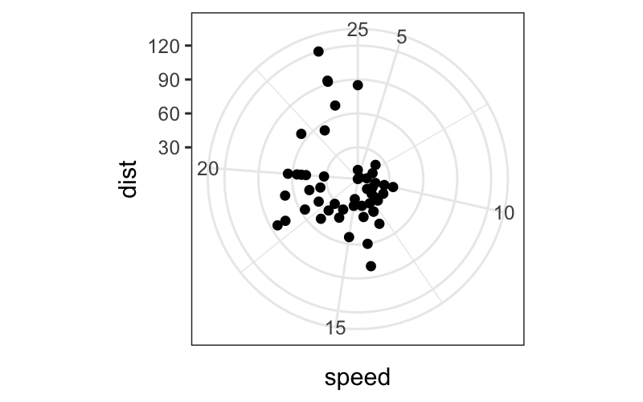
p + coord_polar(theta = "y")
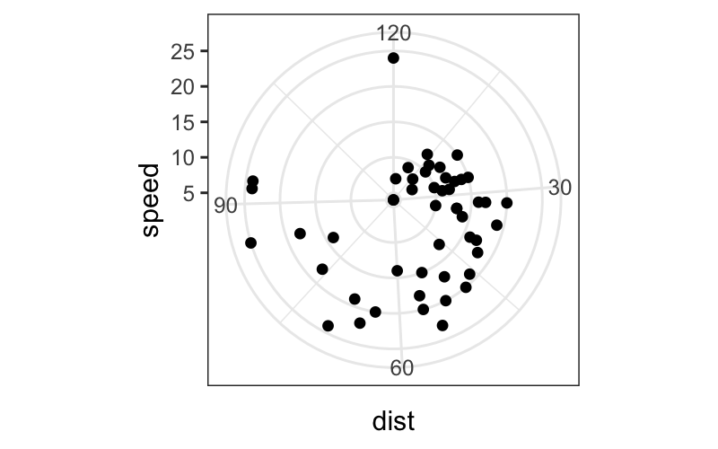
Faceting
Allows you to make small multiples of plots.
Other grammars/plotting systems think of this as just a fancy
coordinate system, but it turns out that it’s easier to use if you think
about it separately.
Each facet plots a subset of the data, and it takes as input what
variable(s) to use to make the subsets and how to lay out the
subsets.
The two options are:
facet_wrap: Lays out the plots for each subset
sequentially.
facet_grid: Subsets the data according to two separate
variables. The facet position along the \(x\)-axis represents levels of one variable,
and the facet position along the \(y\)-axis represents levels of the other
variable.
p = ggplot(mpg, aes(displ, hwy)) + geom_point()
p + facet_wrap(~ class)
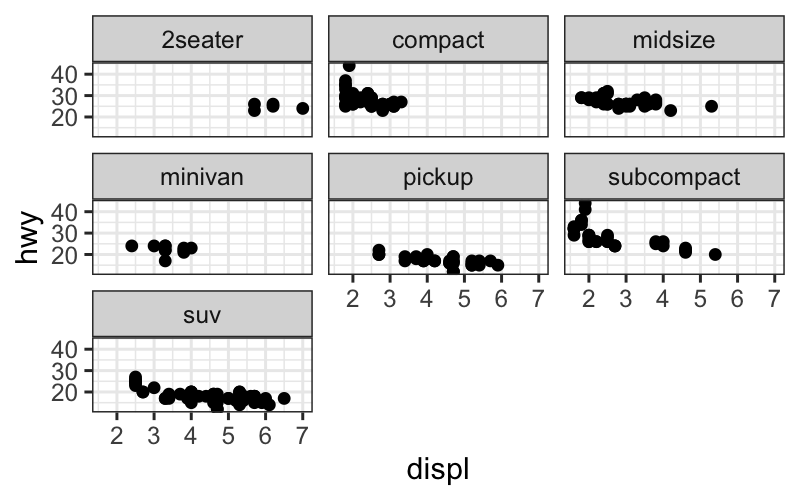
p + facet_grid(drv ~ cyl)
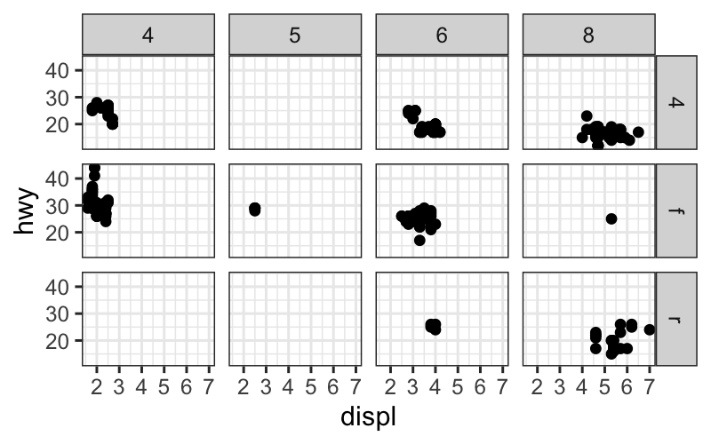
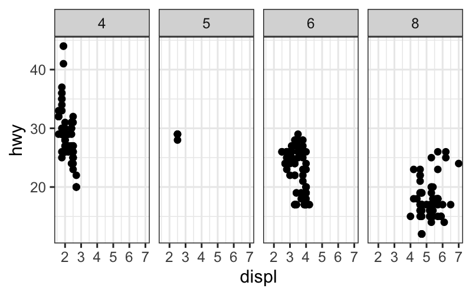
How this all works: the long way
One way to specify a ggplot is to specify all of the components we’ve
seen.
If you understand all the parts, this is probably the least confusing
way to specify a ggplot.
The problem is that it’s very verbose. Suppose we want to make a plot
with points and a smoother from the diamonds dataset. We can specify
data, mapping, geom, stat, and positions for each layer, along with
scales and the coordinate system as follows:
ggplot() +
layer(
data = diamonds, mapping = aes(x = carat, y = price),
geom = "point", stat = "identity", position = "identity") +
layer(
data = diamonds, mapping = aes(x = carat, y = price),
geom = "smooth", position = "identity", stat = "smooth", params = list(method = "lm")) +
scale_x_log10() + scale_y_log10() + coord_cartesian()
## `geom_smooth()` using formula = 'y ~ x'
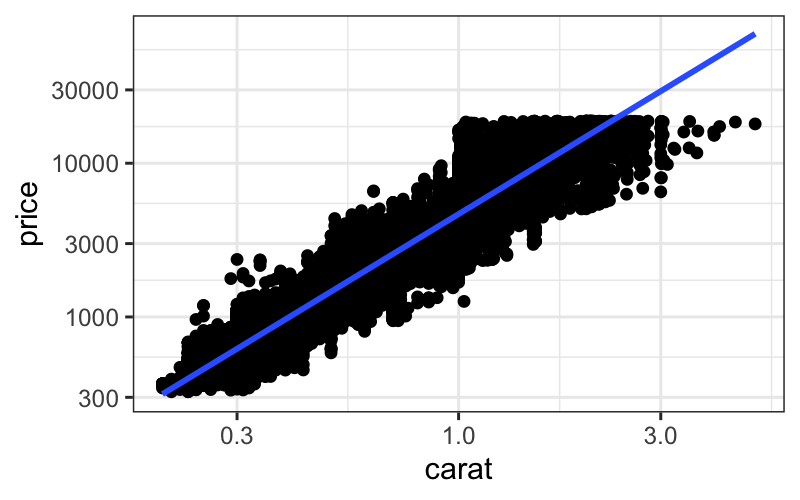
Defaults make the code shorter
The more standard way of writing the same plot would be:
p = ggplot(data = diamonds, aes(x = carat, y = price)) +
geom_point() +
stat_smooth(method = "lm") +
scale_x_log10() +
scale_y_log10()
This is still fairly long, but we don’t have to specify
- position: Default for both
geom_point and
stat_smooth is position = "identity".
- stat, for
geom_point: The default stat for
geom_point is stat = "identity".
- geom, for
stat_smooth: The default geom for
stat_smooth is geom_smooth.
- coordinate system:
coord_cartesian is always the
default.
You can check what stat, geom, and position is used for each of the
layers:
## [1] "data" "layers" "scales" "mapping" "theme"
## [6] "coordinates" "facet" "plot_env" "labels"
## [[1]]
## geom_point: na.rm = FALSE
## stat_identity: na.rm = FALSE
## position_identity
##
## [[2]]
## geom_smooth: se = TRUE, na.rm = FALSE, orientation = NA
## stat_smooth: method = lm, formula = NULL, se = TRUE, n = 80, fullrange = FALSE, level = 0.95, na.rm = FALSE, orientation = NA, method.args = list(), span = 0.75
## position_identity
minard = read_csv("../../datasets/minard.csv")
## Rows: 48 Columns: 5
## ── Column specification ──────────────────────────────────────────────────────────────────────────────────────
## Delimiter: ","
## chr (1): direction
## dbl (4): long, lat, surviv, division
##
## ℹ Use `spec()` to retrieve the full column specification for this data.
## ℹ Specify the column types or set `show_col_types = FALSE` to quiet this message.
minard_cities = read_csv("../../datasets/minard-cities.csv")
## Rows: 20 Columns: 3
## ── Column specification ──────────────────────────────────────────────────────────────────────────────────────
## Delimiter: ","
## chr (1): city
## dbl (2): long, lat
##
## ℹ Use `spec()` to retrieve the full column specification for this data.
## ℹ Specify the column types or set `show_col_types = FALSE` to quiet this message.
plot_troops = ggplot(minard) +
geom_path(aes(x = long, y = lat, color = direction, size = surviv, group = division))
plot_troops
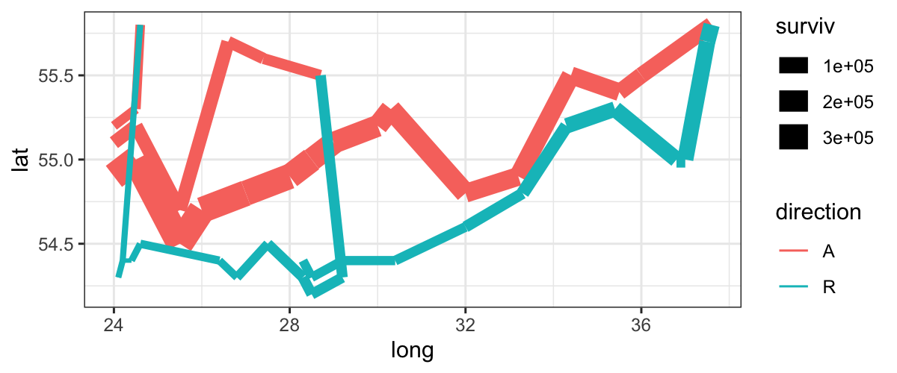
Let’s add another layer for the cities:
plot_both = plot_troops +
geom_text(aes(x = long, y = lat, label = city), data = minard_cities)
plot_both

Notice: we have a new dataset for this layer.
Some things that we still don’t like about this plot:
- We would like the colors for advance and retreat to be grey and
red.
- We want the line widths to be proportional to the number of
survivors.
- We would like the line ends to be round instead of square.
A “final” version of the plot, with better scales:
ggplot(minard) +
geom_path(aes(x = long, y = lat, color = direction, size = surviv^2, group = division), lineend = "round") +
geom_text(aes(x = long, y = lat, label = city), data = minard_cities, size = 3) +
scale_size(range = c(.18, 15), breaks = (1:3 * 10^5)^2, labels = paste(" ", scales::comma(1:3 * 10^5)), "Survivors") +
scale_color_manual(values = c("grey50","red"), breaks = c("A", "R"), labels = c("Advance", "Retreat"), "") +
xlab(NULL) + ylab(NULL) + theme(axis.text = element_blank(), axis.ticks = element_blank(), panel.grid = element_blank())
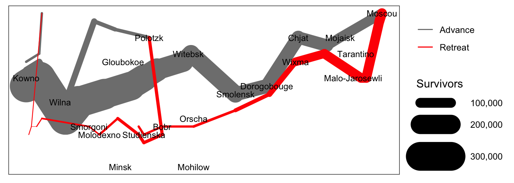
ggplot and EDA
Remember our passage from Tukey:
Exploratory data analysis is detective work… As all
detective stories remind us, many of the circumstances surrounding a
crime are accidental or misleading. Equally, many of the indications to
be discerned in bodies of data are accidental or misleading. To accept
all appearances as conclusive would be destructively foolish, either in
crime detection or in data analysis. To fail to collect all
appearances because some – or even most – are only accidents would,
however, be gross misfeasance deserving (and often receiving)
appropriate punishment.
The flexibility in the grammar of graphics allows us to collect many
more “appearances” in the data than we would be able to if we just have
access to a handful of named plots.
Many of the plots that we can make with ggplot are not useful, but
the point is to try visualizing the data in many different ways. ggplot
opens up a very large space of statistical graphics to us for not very
much effort.